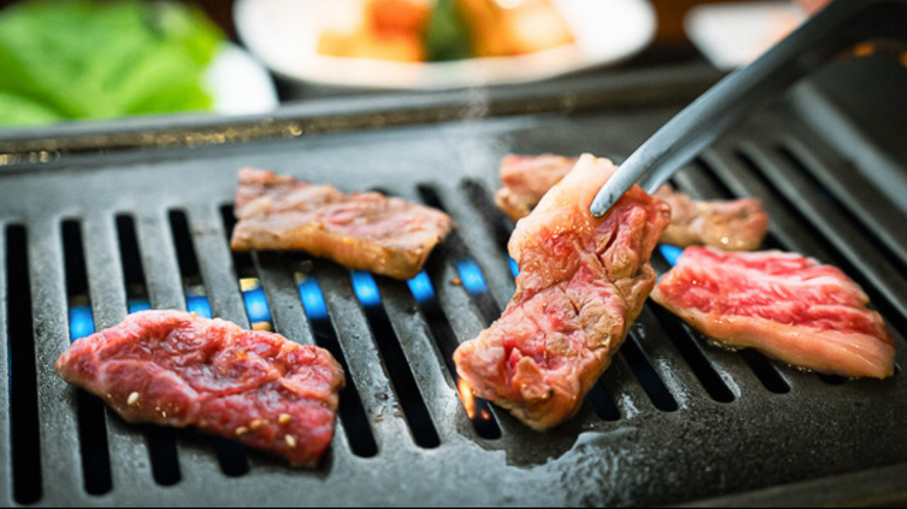
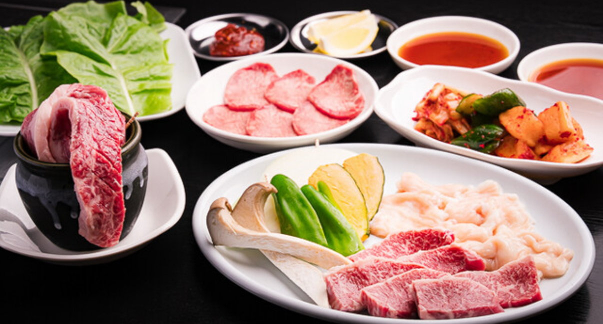

Access
店舗情報・アクセス
焼肉・韓国家庭料理 ムジゲは、堺東駅徒歩10〜12分の立地で、気軽に立ち寄れる焼肉・韓国料理店です。
ご来店時のご案内
※掘りごたつテーブル席を9～10名でご利用いただく場合は、やや席が狭くなる場合がございます。予めご了承ください。
※ラストオーダーは【料理22時30分、ドリンク22時45分】です。
焼肉・韓国家庭料理 ムジゲ
堺東駅徒歩10〜12分。焼きたての香りと韓国家庭料理の温かさを、気軽に楽しめる空間でお届けします。
ひとり飲みからご友人とのご宴会まで、にぎやかな時間をお過ごしください。
大阪・堺で気軽に立ち寄れる焼肉店として、料理と雰囲気を大切にしながら、あたたかい時間をお届けしています。
焼肉の香ばしさと韓国家庭料理の深みをほどよく引き立てる一皿を揃え、家族や仲間と過ごすひとときを心地よく演出しています。
少人数の食事から、友人同士のご宴会まで、リラックスした時間をゆったり楽しめる空間です。
お肉のおいしさを引き立てる、さっぱりとした味わいに仕上げています。
ヤンニョンジャンやチョジャンなど、本格的な韓国の調味料を一つひとつ手作りしています。
甕で提供するマッコリや、人気のチャミスルなど、韓国のお酒もお楽しみいただけます。
食後に締めの一品を囲みながら、笑い声も自然にあふれる夜をお楽しみください。
Menu
Gallery





Access
焼肉・韓国家庭料理 ムジゲは、堺東駅徒歩10〜12分の立地で、気軽に立ち寄れる焼肉・韓国料理店です。
※掘りごたつテーブル席を9～10名でご利用いただく場合は、やや席が狭くなる場合がございます。予めご了承ください。
※ラストオーダーは【料理22時30分、ドリンク22時45分】です。